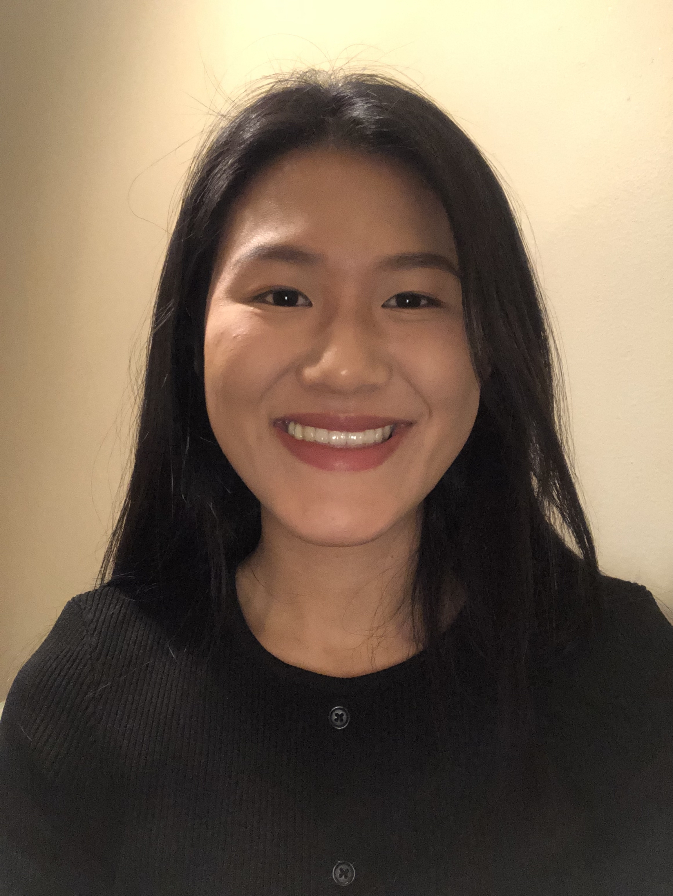

6 About Us
6.1 Mengna Wang

Hi, this is Mengna Wang. I grow up from Suzhou China, a place known with a lot of rivers and bridges. I came to the United States 5 years ago, and went to high school and undergraduate at upstate NY. I always wanted to explore new places in the United States, not just for travel but actually stay there and experience everything there, because I stayed in NY for so long. I am super happy about the opportunity to study at University of Michigan, a completely different place than NY, which is kind of a dream come true opportunity hahaha, and I love here a lot so far. My goal for this year is to finish the program successfully and take the most from the program, have fun and make lots of friends!
6.2 Remona Yu
Hello, My name is Liyang Yu (Remona). I am from Dalian, China, a beautiful small sea port city in the Northeast part of China. This is my 8th year in the United States. I am a typical ENFP, I love to communicate, love to travel, and love all the possible new surprises that occur in life.
6.3 Runze Huang
I’m from Dalian, China. I have developed a huge interest in cooking since I went to college. I love making Chinese and French cuisine, and my signature dish is Seared Duck Breast with Orange Sauce. Besides enjoying delicious food, The cooking experience is a great time for me to be with myself and reflect on recent experience. Although I enjoy cooking by myself, I love inviting friends over to have lunch or dinner!
6.4 Jennifer Feng
Hi I’m Jennifer. I was born in Shanghai, China, on May 3rd, 2000. In 2014, I went to a boarding school in Birmingham, AL. In May 2022, I graduated from William and Mary with a BBA in Finance and a minor in Economics. Right now I am starting the MBAn program (Master of Business Analytics) at University of Michigan Ann Arbor. On a less serious note, I love painting and baking. I love the feeling of oil paint on canvas, and the rich smell of baked goods that floods the kitchen when I open the oven door.
6.5 Carlo De los Santos
Hola! I am Carlo De los Santos and I was born and raised in the beautiful piece of land called the Dominican Republic. Just recently, I graduated from the University of Michigan with a Bachelor’s degree in Business Administration. At the moment I decided to stay one more year in the best university in the world (Go Blue!) to complete a Master’s degree in Business Analytics at the Stephen M. Ross School of Business. I enjoy playing sports like Ultimate Frisbee and Volleyball, listening to reggaeton and rock music, and traveling.